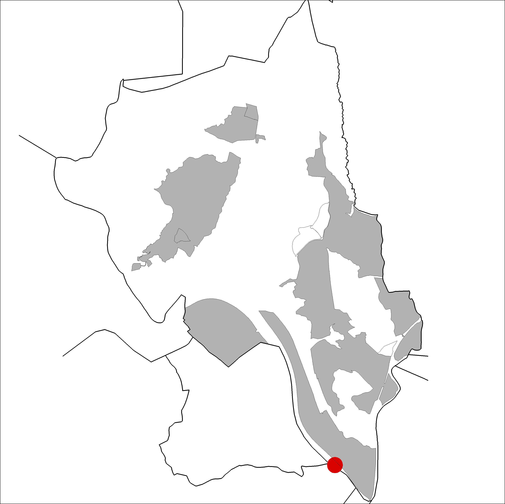

|  |
|
Nom de l’element: Restes d’una barca al riu Llobregat
Clau d’identificació: C.09
Nucli o indret: Riu Llobregat, al límit del terme municipal de Corbera de Llobregat.
Règim del sòl: sistema hidrològic
Egrave;poca de construcció i tipologia:
Restes d’una antiga barca de pesca utilitzada en l’antiga activitat piscícola del riu Llobregat. Es troba pendent de realitzar una prospecció arqueològica a la zona per tal de determinar-ne les seves característiques i el seu estat de conservació.
1.2. Estat de conservació:
Desconegut.
1.3. Ús actual:
Patrimoni arqueològic.
1.4. Accés:
Accés difícil des de la riba dreta del riu Llobregat, aigües avall.
Patrimoni arqueològic, pot tractar-se d’una troballa d’elevada importància per la seva singularitat a la zona.
3.1. Usos admesos:
Patrimoni arqueològic.
3.2. Condicions d’ordenació:
3.3. Accés
Accés difícil des de la riba dreta del riu Llobregat, aigües avall.
BPU (Bé Protegit Urbanísticament)